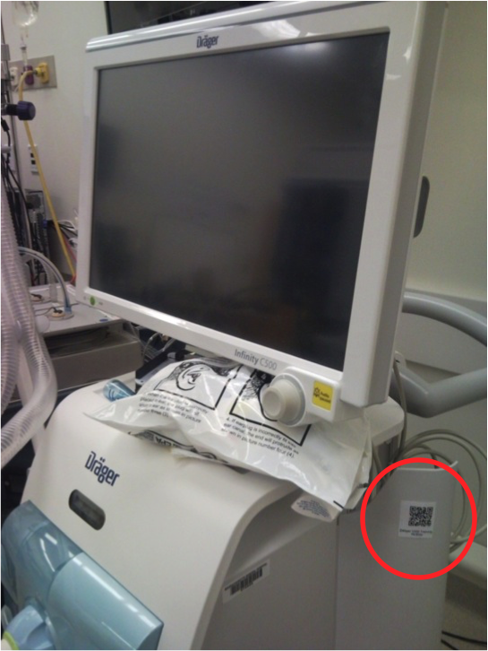

Welcome to the Fictional Ventilator Point-of-Care resources page (Concept Demo)
Index of contents
Resources
- Drager Apollo Anesthesia Workstation Official Webpage.
- E cylinder information table. Resource is from Basics of Anesthesia, 6th edition, by Ronald D. Miller, Manuel C. Pardo. Chapter-15, table-15-2
- Concise anesthesia machine checklist for daily use. Resource is from Indian Journal of Anesthesia
{kind=link}
Frequently Asked Questions
 |
 |  |
| As part of our research, we have placed QR codes to some of the devices in our lab, to illustrate and further investigate how a QR code attached to a medical device could point to useful online references that would be quickly available for a clinician. | ||
Frequently Asked Questions
Q: Can you do closed circuit anesthesia with the drager apollo piston ventilator?
A: The Apollo uses a piston ventilator, which eliminates the need for drive gas. However, the fresh gas flow and anesthetic vapor function similar to the Fabius GS and older Draeger products. There should always be some fresh gas flow to replace consumed Oxygen and to replenish lost volume from leaks.